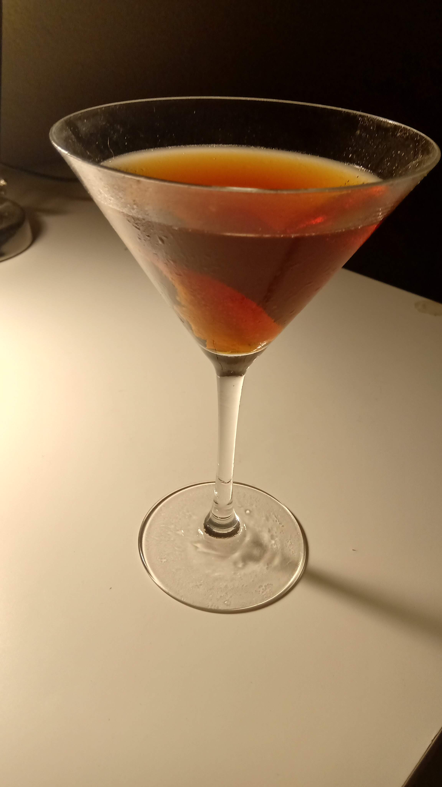

Manhattan

What is better than a fancy cocktail at the end of a long day ?
Nothing
Here is how to achieve that greatness.
You will need ;
- 2 ounces whiskey
- 1 ounce sweet vermouth
- 2 dashes Angostura bitters
- 1 lemon twist
Steps ;
- Add the bourbon, sweet vermouth and bitter to a mixing glass with ice, and stir until well-chilled
- Strain into a chilled coupe
- Garnish with a lemon twist
- Enjoy the simple things in life
Back To Top
Back To Main Menu